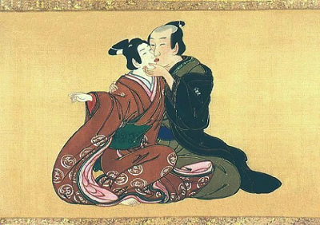
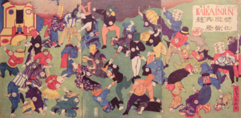
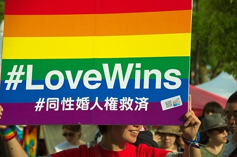
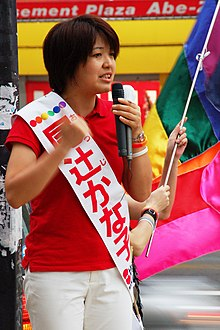
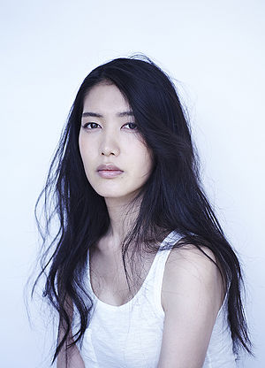
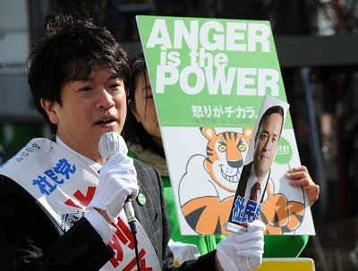
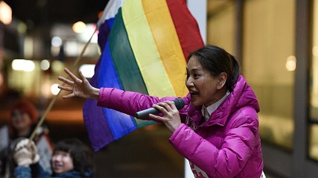
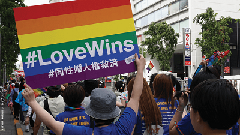

Relationships inside Buddhist monasteries were usually between an older partner who would be a monk or a priest, while the younger partner would be a prepubescent boy.
Some of the Shinto gods, especially Hachiman, Myoshin, Shinmei and Tenjin, were known to be guardians of male on male love.
Sodomy is criminalized to comply with the new beliefs of Western culture and the Qing legal codes.
The first group of women in Japan to publicly identify as lesbians where published on one issue of a magazine called Subarashii Onnatach which in english translates to wonderful women.
Japan court pases law banning same-sex marriage.
The group OCCUR which stands for Japan Association for the Lesbian and Gay Movement won a court case against a Tokyo government policy that blocked LGBT youth from using the Metropolitan House for Youth.
The Council for Human Rights Promotion suggests that sexual orientation should be included in the nation's civil rights code, but the Diet refused to adopt the recommendation.
The government agency that operates government housing (the Urban Renaissance Agency) has allowed same-sex couples to rent units the same way as heterosexual couples at any one of the over 300 properties that it operates.
A law is passed allowing transgender people to change their gender marker on legal documents to their prefered gender.
Aya Kamikawa becomes the first openly transgender politician to be elected to public office in Japan after winning a seat on the Setagaya Ward Assembly.
Kanako Otsuji became the first openly gay politician in Japan when she formally went public at the Tokyo Gay Pride Festival.
Ataru Nakamura, singer-songwriter and actress was one of the first transgender personalities to become highly popular in Japan.
Japan began allowing Japanese nationals to marry same-sex partners in countries where same-sex marriage is legal.
Fashion model Hiromi came out publicly as a lesbian.
Taiga Ishikawa becomes the first openly gay man elected to office in Japan.
The Hyogowyers' Association suggests that a transgender woman in a male prison be transferred to a female institution.
Yodogawa-ku, Osaka, becomes the first Japanese government section to pass a act officiating support for LGBT inclusion, including mandating LGBT sensitivity training for staff.
The ward of Shibuya announced plans to create a partnership system that would recognize same-sex couples for situations such as hospital visits and shared renting of apartments.
The Education Ministry adds sexual orientation and gender identity to its national bullying policy.
Osaka recognizes a same-sex couple as foster parents.
Tomoya Hosoda was elected to the Iruma Assembly, in the prefecture of Saitama and is the first openly transgender man elected to public office in the world.
The Tokyo Metropolitan Assembly passes a law prohibiting discrimination on the basis of sexual orientation and gender identity at schools.
The Ministry of Health, Labor and Welfare revised the Model Rules of Employment to prohibit discrimination based on sexual orientation and gender identification in the job market.
The city of Kunitachi passed an "anti-outing" ordinance to push for the understanding of LGBT people.
Transgender people are covered for sex reassignment surgery as long as the person is not receiving hormone treatment.
In Ibaraki Prefecture a legislation banning discrimination against sexual minorities passes.
A committee of the ruling Liberal Democratic Party announced the LGBT Understanding and Enhancement Bill that aimed to improve the understanding of LGBT issues.
Maria Akasaka, a trans woman becomes a member of the Kameoka City Assembly.
Ayako Fuchigami, a trans woman wins a seat on the Hokkaido Prefectural Assembly Becoming the first openly transgender person to hold a prefectural assembly position in Japan.
Male same-sex relationships become visible with the popular TV drama "What Did You Eat Yesterday?".
96 human rights and LGBT organizations send a letter to the Prime Minister calling for a LGBT non-discrimination law.
Several Japanese love hotels were denying entrance to same-sex couples on the gorunds of their sexual orientation, in spite of it being illegal under federal law.
Human Rights watchers write a letter encouraging Japan officials to allow transgender women to enroll in public women's universities and colleges in the country.
A district court in Sapporo ruled that regulations that restrict same-sex couples of the right to marry constitute unlawful discrimination and violate Article 14 of the Constitution of Japan.
The LDP announces it will pass the LGBT Understanding and Enhancement Bill that requires the government to push for the understanding of LGBT people, however does not actually ban discrimination.
